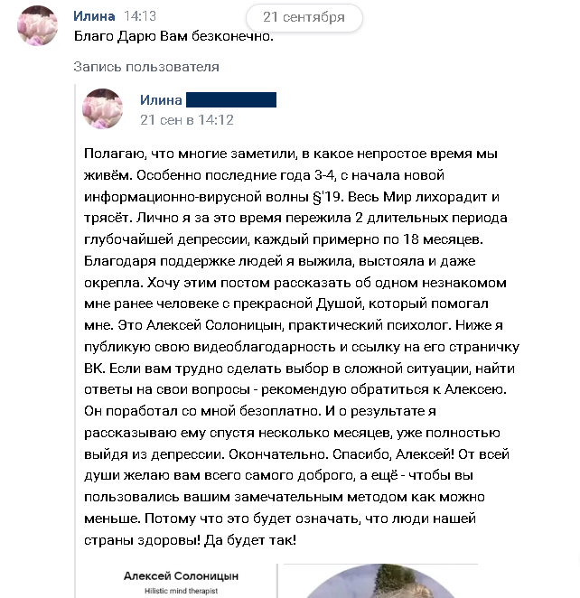

Итак, проложим...
-
Преодоление родовых сценариев: как перестать жить чужими проблемами
Родовые сценарии могут влиять на нас гораздо сильнее, чем мы думаем. Эти неосознанные установки могут стать источником страха, беспокойства и даже панических атак. Работа с такими сценариями позволяет разобраться в том, какие убеждения и паттерны передаются через поколения, и как эти установки могут ограничивать нашу жизнь. Процесс трансформации этих сценариев даёт возможность освободиться от старых травм и жить более свободно и гармонично.
-
Изменение убеждений: путь к восстановлению и внутренней гармонии
Старые убеждения — это как старые программные ошибки, которые влияют на наше восприятие мира
и мешают нам жить полноценно.
Когда мы заменяем эти убеждения, открывается пространство для новых возможностей и
позитивных изменений.
В процессе работы мы заменим старые убеждения, ограничивающие твою свободу, на новые — более
позитивные и ресурсные, которые открывают перед тобой новые горизонты и возможности.
-
Развитие внутренней уверенности и самостоятельности
Вместо того чтобы искать ответы у других, ты научишься доверять своему внутреннему голосу и
интуиции.
Мы будем работать над тем, чтобы ты мог(ла) находить решения самостоятельно, принимая более
осознанные и уверенные решения в жизни.
Ты перестанешь зависеть от мнений других людей, научишься слушать себя и принимать те
решения, которые действительно важны для твоего счастья.
-
Онлайн-курс для избавления от панических атак:
Моя программа включает в себя прохождение уникального онлайн-курса, специально
разработанного для избавления от панических атак.
Он включает в себя видеоуроки, практические занятия и полезные материалы, которые помогут
тебе глубже понять механизмы возникновения панических атак и научиться справляться с ними,
используя эффективные техники и практики.

Индивидуальная работа на каждом шагу пути
На протяжении всей программы мы будем работать над тем, что мешает тебе достичь твоих целей,
устраняя внутренние преграды и ограничения.
Это будет не просто общая теория, а индивидуальная работа, направленная на прояснение и
проработку каждого из факторов, который тормозит твоё движение вперёд.
Программа направлена на то, чтобы ты достиг(ла) своих целей с минимальными затратами времени
и усилий.
Для этого на протяжении всех восьми недель мы будем персонально работать с тем, что мешает
тебе двигаться к цели.
Такой индивидуальный подход обеспечит тебе быстрый прогресс и максимально комфортное
преодоление препятствий.
🔥🔥🔥
Индивидуальный подход с использованием современных техник
В своей работе я применяю самые эффективные и передовые методы, которые воздействуют на все
аспекты жизни человека — от эмоций и психики до поведения и привычек.
Эти инструменты позволяют не только решить проблемы с паническими атаками, но и повысить
качество жизни в целом, создавая устойчивую основу для личной трансформации.
В сочетании с индивидуальным подходом они помогают развить уверенность в себе, научиться
справляться с трудными ситуациями и вернуть гармонию в каждый день.
Хочешь изменить свою жизнь навсегда?
Запишись на бесплатную консультацию, и я покажу тебе, как избавиться от панических атак.